현대 슬로건
더 나은 세상을 위한 항해 차별화된 기술력과 창조적인 사고
더 큰 도약을 위한 현대중공업의 도전은 계속됩니다.창의와 혁신, 새로운 도전 도전을 멈추지 않는 뜨거운 열정과 원칙을 지키는 강한 신념으로
지속가능한 미래를 열어가겠습니다.더불어 행복한 사회 현대중공업은 더불어 잘 사는 사회를 꿈꾸며
1%나눔 등 다양한 사회공헌 활동을 펼치고 있습니다.

현대중공업 기업블로그
-
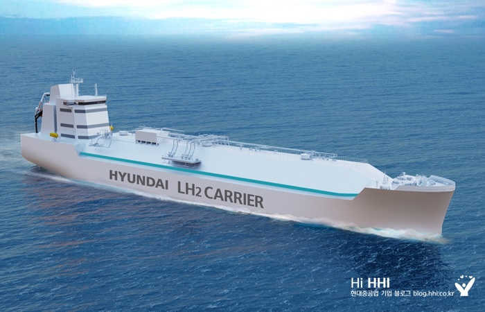
현대重그룹, ‘가스텍’서 차세대 그린십 선보여
“해상 모빌리티 분야 친환경 기술 패러다임 이끌어 나갈 것” 현대중공업그룹이 세계적 가스행사인 가스텍에서 이산화탄소(CO2), 수소, 암모니아 등 차세대 그린십(Green Ship) 기술력을 대거 선보여요. 현대중공업그룹은 오는 21일(화)부터
-
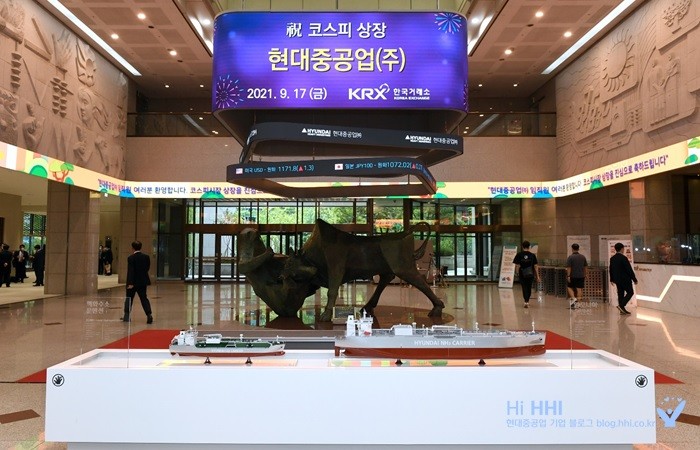
투자자 큰 관심 “미래 성장성 높게 평가”
현대중공업이 시장과 투자자의 뜨거운 호응 속에 성공적으로 기업공개(IPO) 절차를 마치고 지난 9월 17일(금) 유가증권시장(KOSPI)에 상장됐어요. 현대중공업은 상장 첫 날 공모가인 6만원에서 86% 오른 11만1천500원으로 거래를 마쳤어요. 앞서 현대중공업은
-
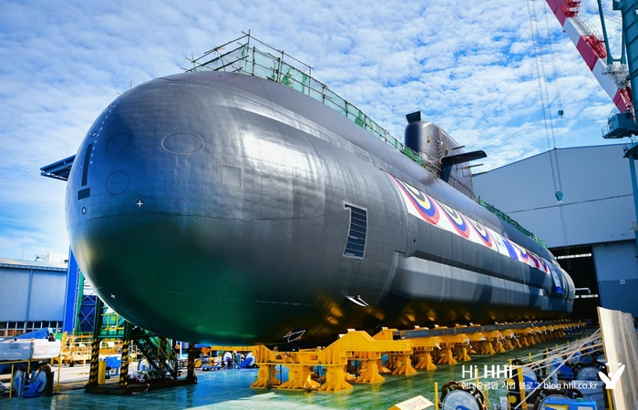
현대重, 3천톤급 최신예 잠수함 ‘신채호함’ 진수
장보고-Ⅲ급3번함 … 길이 83.5미터, 폭 9.6미터, 승조원 50여명 탑승 현대중공업이 대한민국 해군의 세 번째 3천톤급 최신예 잠수함을 진수했어요. 현대중공업은 28일(화) 울산 본사에서 현대중공업 한영석 사장, 남상훈 특수선사업본부장과 부석종
-
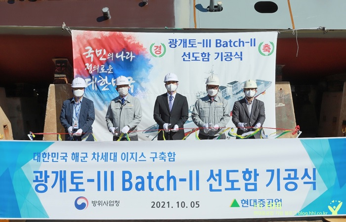
현대重, 차세대 이지스함 선도함 기공
미사일·어뢰·레이더·보조추진체계 등 탑재 2024년 말 인도 현대중공업이 우리나라 해군의 ‘차세대 이지스함’ 건조에 박차를 가하고 있어요 현대중공업은 5일(화) 울산 본사에서 방위사업청, 국방
-
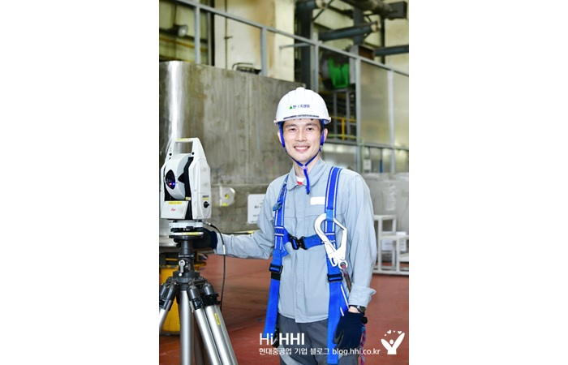
“뛸수록 도전할 힘이 생겨요!”
현대중공업 김정호 사우(ITER생산부)는 주말마다 주전 해안을 달려요. 비가 오나 몸이 찌뿌둥해도 운동화 끈을 조여 매죠. “2009년 부사관 복무를 마치고 현대중공업 기술교육원에 입교했습니다. 이 길을 선택했으니 끝을 봐야겠는데 출발점 언저리에서 맴돌고
-
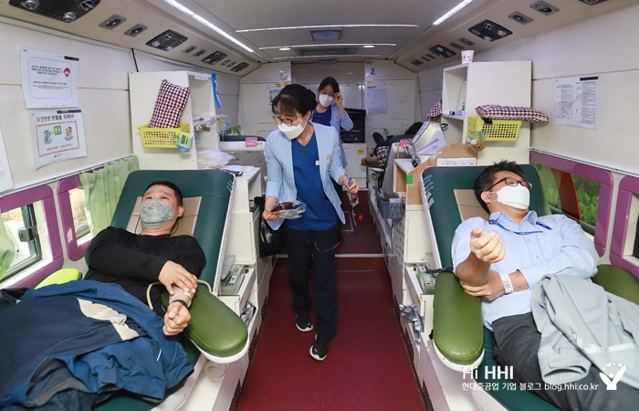
현대重, 노사 함께 ‘사랑의 헌혈’ 팔 걷었다
현대건설기계, 현대일렉트릭 등 그룹사 포함 500여명 동참 현대중공업 임직원들이 올해 하반기에도 단체헌혈로 생명 나눔을 실천해요. 현대중공업은 대한적십자사 울산혈액원과 함께 18일(월)부터 오는 25일(월)까지 사내 12곳에서 헌혈버스 2대로 &lsq
-
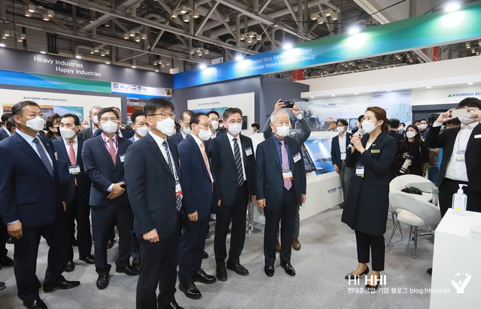
현대重그룹, 친환경・스마트십 첨단 기술 대거 선보여
친환경 암모니아선・AI 기반 선박 기술・수소 인프라 등 이목 집중 현대중공업그룹이 국내 최대 조선・해양 산업전시회에서 친환경・스마트 선박 관련 기술을 대거 선보여요. 현대중공업, 현대미포조선, 현대삼호
-
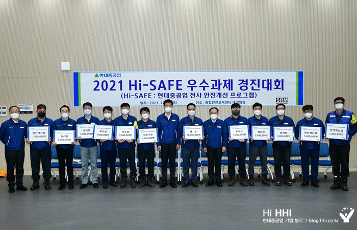
‘예방 중심 안전관리’로 재해 막는다
현대중공업이 ‘안전 최우선’ 경영에 전사적인 역량을 쏟고 있는데요. 직원 참여를 통해 작업현장의 위험요소를 사전 발굴하고 안전사고를 근절하기 위한 예방 중심의 안전관리에 적극 나서고 있습니다.

현대중공업TV
-
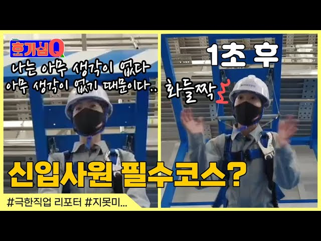
호기심Q [4편] 신입사원 필수코스라구요?
현대중공업 사원이든, 사내협력사 사원이든 모두가 거쳐야 하는 필수코스가 있습니다. 우리 현장의 가장 소중한 가치, '안전'의 중요성을 깨닫는 교육인데요. 호기심Q의 열정 리포터가 비명을 지른 이유는 무엇일까요? #많관부
-
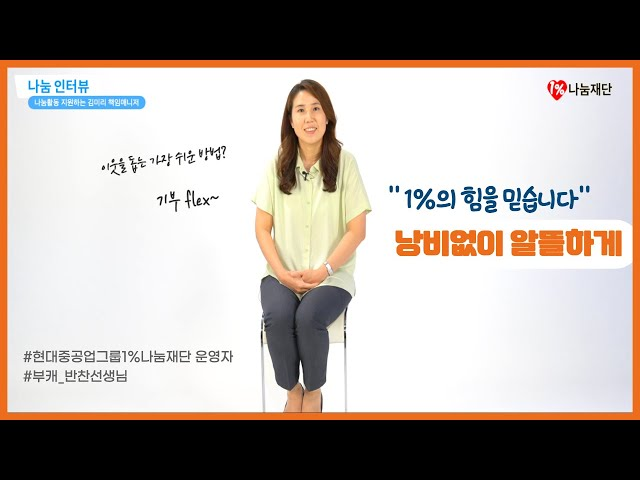
[현대중공업그룹1%나눔재단 나눔 인터뷰] 내 사전에 낭비란 없다!!!
현대중공업 사회공헌팀에서 현대중공업그룹1%나눔재단을 운영하고 있는 김미리 책임매니저. 김미리 책임에게는 고민이 있습니다. '어떻게 하면 조금 더 알뜰하게 1%나눔재단을 운영할 수 있을까?' '어떻게 하면 조금 더 도움이 필요한 우리 이웃들을 찾을 수 있을까?'인데요. 현대중공업그룹1%나눔재단 나눔인터뷰 세번째. 부캐 반찬선생님으로도 활동하며 1%나눔재단을 운영하고 있는 김미리 책임매니저의 나눔 인터뷰를 들어봅니다. #현대중공업그룹1%나눔재단 #반찬선생님 #나눔어렵지않아요
-
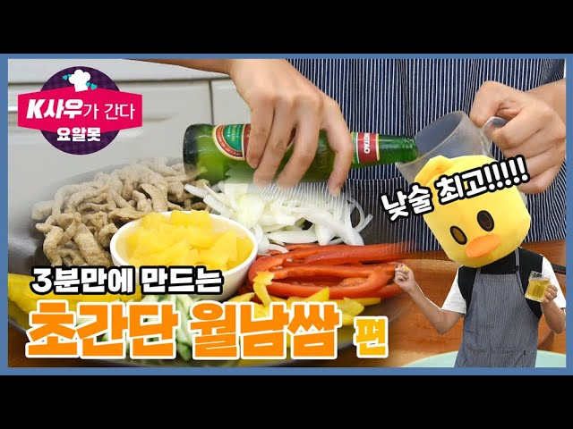
초간단 월남쌈 3분만에 만들기_요알못(요리도 알지 못하는) K사우가 간다- 요리초보자가 만드는 초간단 요리열전
#3분요리 #베트남 #월남쌈 -래시피 제공 : 현대미포조선 품질경영부 김종철 사원 자취 경력 9년차, 할 줄 아는 요리는 김치볶음밥과 파스타가 전부인 K사우. 배달음식으로 연명해 자신의 몸에게 미안해하는 현대중공업 그룹 모든 요알못(요리를 알지 못하는 사람)들을 대표해 K사우가 나섰습니다. 요알못, K사우가 간다는 현대중공업그룹 임직원들이 보내준 레시피를 K사우가 직접 요리해보고 평가하는 코너입니다. 오늘은 우리의 K사우가 도전할 요리는 월남쌈입니다. 과연 성공할 수 있을까요? 3분만 투자해 보세요~ 요알못, K사우가 간다는 현대중공업그룹 웹진 매거진 H에서도 만나보실 수 있습니다. http://www.hyundai-holdings.co.kr # Copyright 현대중공업. 무단 전재 및 재배포 금지
-
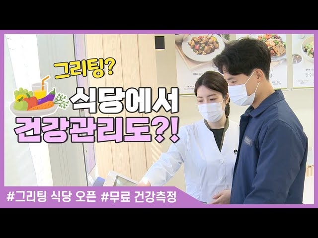
사내식당이 사우들 건강도 관리해준다고???_그리팅 식당 오픈
그리팅이라고 아시나요? Great + Eat 를 합친말로 바르고 건강한 식사를 말합니다. 현대중공업에서는 2017년부터 고혈압, 고지혈증, 당뇨 등 고위험 사우들을 대상으로 그리팅 식단을 제공해 왔는데요. 더 나아가 최근에는 그리팅 식당을 조성해서 무료로 건강측정까지 해준다고 합니다. 점심시간, 사우들의 건강도 책임지는 그리팅 식당 함께 보실까요?
-
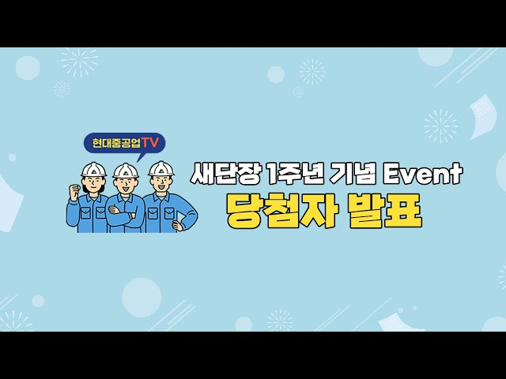
현대중공업TV 새단장 1주년 기념 이벤트 당첨자 발표
현대중공업TV 새단장 1주년 기념 이벤트에 참여해주신 여러분 모두 고맙습니다~~!!!! 😍 여러분이 보내주신 의견을 잘 수렴하여 현대중공업TV는 더욱 알찬 정보들을 전달할 수 있도록 노력하겠습니다. 🙇♀️ 추첨을 통해 모두 22명의 당첨자를 선정했습니다. 당첨되신 여러분 모두 축하드립니다!!! 🎉🎊 *당첨자에게는 개별 연락 드립니다. 앞으로도 현대중공업TV에 많은 관심과 사랑 부탁 드립니다!!!❤️
-
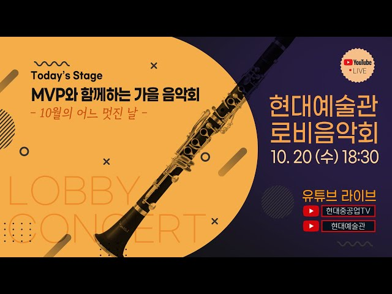
[🎼현대예술관🌙로비음악회 LIVE ] Ep.7 MVP와 함께하는 가을음악회 - '10월의 어느 멋진 날'
2001년부터 열리고 있는 현대예술관 로비음악회는 지역 문화예술 향상에 기여하고자 연주기회가 부족한 지역 예술인 또는 아마추어 예술인(단체)에게 공연을 할 수 있는 무대를 제공하는 프로그램입니다. 코로나19 이전에는 현대예술관 로비에서 관람객을 초청해 열렸으나 코로나19 이후에는 현대예술관 로비에서 열리는 음악회를 유튜브를 통해 생중계 방송해드리고 있습니다. # Copyright 현대중공업. 무단 전재 및 재배포 금지
-
현대중공업TV와 함께하는 오~ 이런 지식_단풍은 어떻게 색깔을 낼까??
현대중공업TV와 함께하는 오~ 이런 지식 '오이지' 단풍의 계절 가을입니다~ 단풍의 색깔을 다양하지만 대부분 빨강이나 노란색을 띱니다. 그럼 단풍은 어떻게 해서 색깔을 내는걸까요?? 단풍에 대해 오~ 이런 지식과 함께 알아보시죠 *.*! # Copyright 현대중공업. 무단 전재 및 재배포 금지
-
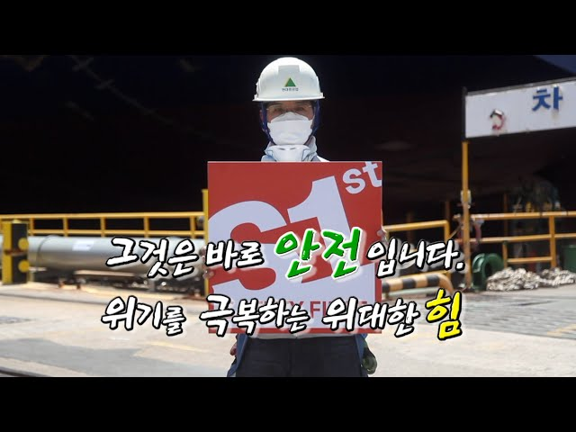
위기를 극복하는 위대한 힘, 그것은 바로 안전입니다
#현대중공업안전 #중대재해근절